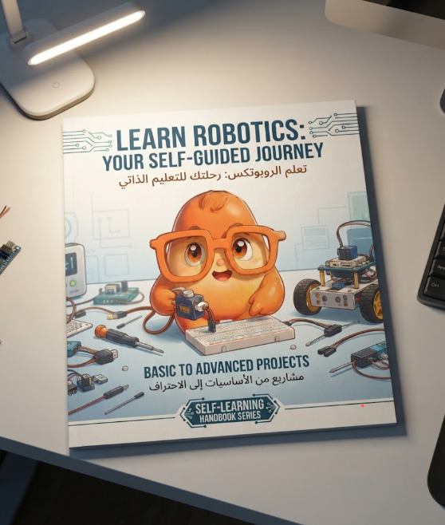
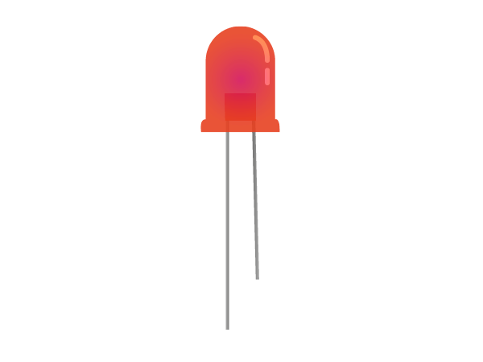
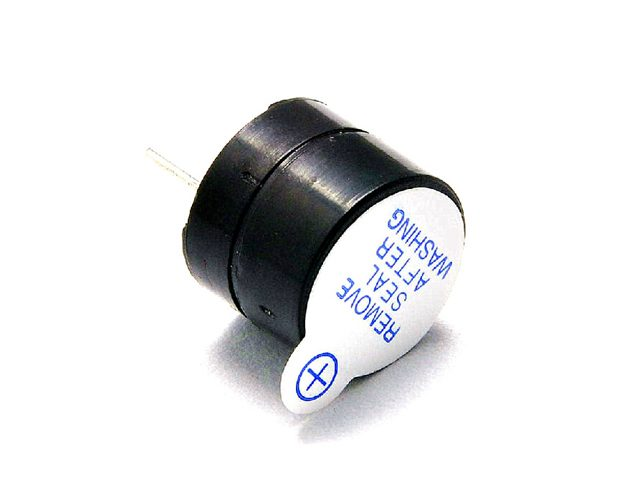
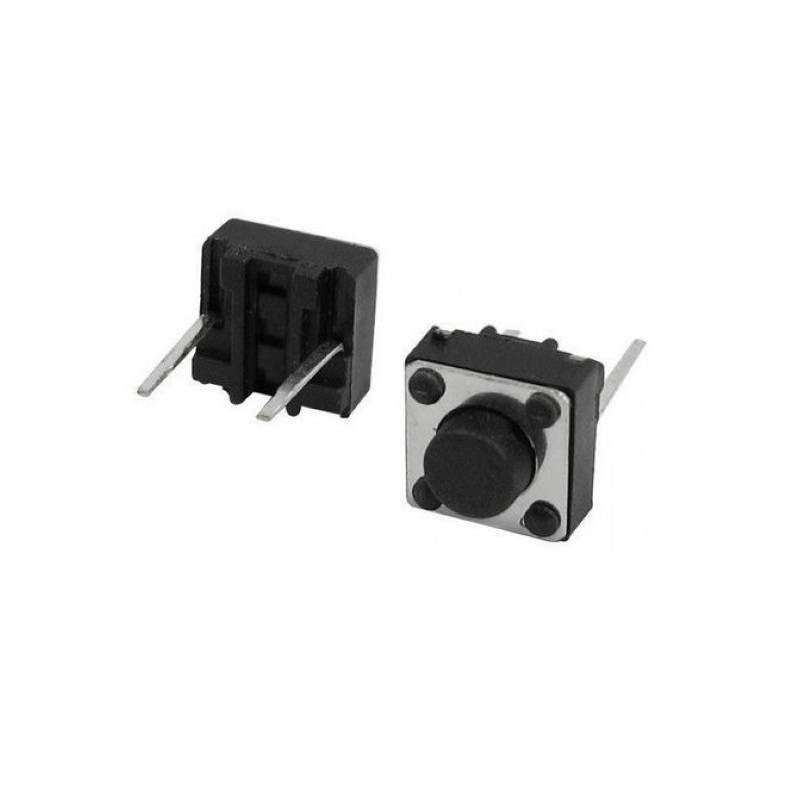
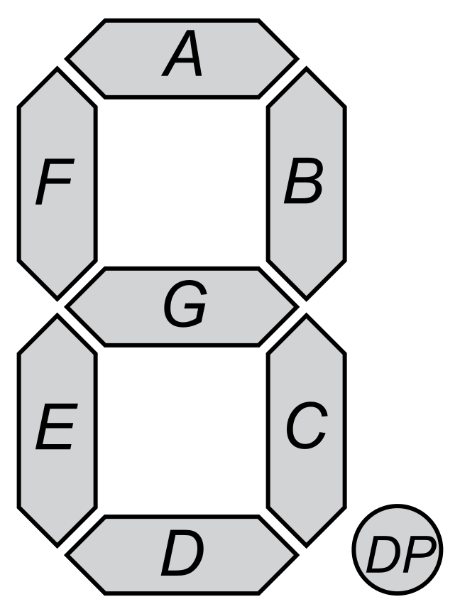

كتيب الروبوتكس للتعلّم الذاتي (Robotics Master Book)
يستعرض هذا التصميم السلايدات والصفحات الداخلية للكتيب كما سيتلقاها الطالب: تشمل **المكونات الإلكترونية بالصور، خطوات الطالب المحددة، التوصيلات، خطوط الأكواد، واستكشاف الأعطال**.

مستعرض صفحات الكتيب التفاعلي (16 سلايد كاملة)
تصفح السلايدات والدروس بالأسهم أو بالأزرار لرؤية تفاصيل خطوات الطالب والصور
غلاف الكتيب والمقدمة الرسمية
كتيب الروبوتكس الشامل والداعم للتعلّم الذاتي
دليل متكامل ومصمم بطريقة **الـ Visual Step-by-Step** ليُمكن الطالب من بناء وتكويد مشاريع الأردوينو والروبوتكس بمفرده. يحتوي على كافة الصور، المخططات، خطوط الأكواد، واستكشاف الأعطال.
خطوات الطالب للتعلّم الذاتي (Student Workflow)
📌 كيف تستخدم هذا الكتيب لتصبح مخترعاً محترفاً؟
في كل درس أو مشروع داخل الكتيب، عليك اتباع الخطوات الأربع التالية بالترتيب لضمان النجاح بدون أخطاء:
المكونات والتجهيز
تأكد من توفير الأدوات المطلوبة الموضحة بالصور في بداية كل درس.
التوصيل الكهربائي
اتبع رسمة المنافذ والمخطط المرفق ووصل الأسلاك قبل التغذية.
كتابة الكود وفهمه
اكتب الأكواد في Arduino IDE واقرأ الشرح التوضيحي المكتوب لكل سطر.
التجربة والصيانة
اختبر مشروعك، وإذا حدث عطل راجع جدول Troubleshooting في ص 15.
جدول المحتويات والمسار التدريبي الشامل
- ص 4: ما هو الروبوتكس وكيف تفكر الروبوتات؟
- ص 5-8: كتالوج الأدوات والحساسات والمشغلات بالصور الشاملة.
- ص 9: Level 1 - الإلكترونيات وقانون أوم والمقاومات.
- ص 10: Level 2 - قراءة وتوصيل الحساسات الرقمية والتماثلية.
- ص 11: Level 3 - برمجة الأردوينو والأوامر.
- ص 12: مشروع أنظمة الإنذار الذكية (Flame & PIR).
- ص 13: مشروع جهاز قياس المسافات وشاشة LCD.
- ص 14: مشروع الروبوت النهائي تفادي العوائق.
- ص 15: دليل كشف واستكشاف الأعطال (Troubleshooting).
- ص 16: قائمة التقييم الذاتي وشهادة الإنجاز.
ما هو الروبوتكس وكيف تفكر الروبوتات؟
🧠 دورة عمل أي نظام روبوتي في العالم:
يتعلم الطالب أن أي روبوت يعتمد على 3 مراحل رئيسية: جمع البيانات بواسطة الحساسات (Inputs)، معالجة البيانات بكود الأردوينو (Processing)، ثم تنمية الاستجابة في المحركات والإضاءات (Outputs).
كتالوج الأدوات (1) - الأردوينو ولوحة التجارب
🧠 لوحة الأردوينو (Arduino Uno)
Main Boardالعقل المفكر للروبوت. يحتوي على 14 منفذاً رقمياً (Digital Pins 0-13) و6 منافذ تماثلية (Analog Pins A0-A5)، ويُغذي الدوائر بجهد 5V.
• Digital Pins (2-13): قراءة وتشغيل المخرجات والحساسات.
🍞 لوحة التجارب (Breadboard)
Prototypingلوحة توصيل سريعة تتيح لك توصيل الحساسات والمقاومات مع الأردوينو بدون لحام. الصفوف الطويلة على الأطراف مخصصة للتغذية (+ 5V و - GND).
كتالوج الأدوات (2) - المحركات وقائد المحركات L298N
DC Geared Motors
محركات حركة العجلات. صندوق التروس يزيد العزم لتشغيل عجلات الروبوت بسلاسة.
Servo Motor SG90
محرك يدور بزوايا دقيقة (0-180°). يُستخدم لتوجيه الحساسات والأذرع الروبوتية.
L298N Motor Driver
دائرة قيادة المحركات. تتحكم في سرعة واتجاه محركين DC باستقبال أوامر الأردوينو.
كتالوج الأدوات (3) - حساسات المسافة واللهب والضوء
HC-SR04 Ultrasonic
حساس الموجات فوق الصوتية. يرسل موجة من Trig ويستقبلها من Echo لحساب المسافة.
Flame Sensor Module
مستشعر النيران يكشف الضوء والأشعة تحت الحمراء الناتجة من اللهب لإطلاق الإنذار.
LDR Photoresistor
مقاومة ضوئية تتغير قيمتها بالضوء. تُستخدم لإنارة الكشافات تلقائياً في الظلام.
كتالوج الأدوات (4) - الشاشات وعناصر التفاعل مع صور المكونات

LED Light
دايود مشع للضوء له طرف موجب طويل وطرف سالب قصير.

Piezo Buzzer
جرس تنبيه يصدر نغمات وأصوات إنذار عند إعطائه إشارة HIGH.

Push Button Switch
مفتاح ضغط لإرسال إشارة للبدء أو إيقاف الأوامر للأردوينو.

7-Segment Display
شاشة أرقام ثنائية لعرض الأرقام والعدادات بشكل مبسط.
Level 1 - أساسيات الدوائر وقانون أوم
⚡ قانون أوم وحماية المكونات الإلكترونية:
يتعلم الطالب حساب المقاومة الكربونية لحماية الـ LED من التلف. معادلة أوم: $V = I \times R$ حيث $V$ الجهد، $I$ التيار بالأمبير، و $R$ المقاومة بالأوم.
2. جهد الـ LED V_led = 2V ، التيار المطلوب I = 0.02A (20mA)
3. قيمة المقاومة R = (5 - 2) / 0.02 = 150 Ohm ➔ نستخدم مقاومة 220 Ohm للتأمين.
Level 2 - قراءة وفهم بيانات الحساسات
تقرأ حالتين فقط: إما HIGH (5V) أو LOW (0V). مثال: حساس الحركة PIR، حساس لهب ديجيتال، زر الضغط.
تقرأ مدى متدرجاً من القيم بين 0 إلى 1023. مثال: حساس الضوء LDR، مستشعر الحرارة.
Level 3 - برمجة ومتحكمات الأردوينو
💻 خطوات الطالب البرمجية داخل Arduino IDE:
مشروع 1 - نظام إنذار الحريق والحركة الذكي
if (digitalRead(2) == HIGH || digitalRead(3) == HIGH) {
digitalWrite(13, HIGH); tone(8, 1000);
} else { digitalWrite(13, LOW); noTone(8); }
مشروع 2 - رادار قياس المسافات وشاشة LCD 16x2
📡 خطوات الطالب للتوصيل والبرمجة:
يوصل الطالب منافذ Ultrasonic (Trig ➔ D9, Echo ➔ D10) ومنافذ LCD، ثم يحسب الكود سرعة الموجات الصوتية لإظهار المسافة بالسنتيمتر على الشاشة.
digitalWrite(9, LOW); delayMicroseconds(2);
digitalWrite(9, HIGH); delayMicroseconds(10); digitalWrite(9, LOW);
long duration = pulseIn(10, HIGH);
float distance = (duration * 0.0343) / 2;
lcd.clear(); lcd.print("Distance: "); lcd.print(distance); lcd.print(" cm");
المشروع النهائي - روبوت تفادي العوائق وتتبع الخط
🤖 تجميع هيكل ومحركات الروبوت الذكي:
يدمج الطالب جميع المهارات! تجميع الشاسي، توصيل المحركين بقائد L298N، وتثبيت مستشعر الـ Ultrasonic فوق محرك السيرفو للبحث عن الاتجاه المفتوح.
دليل استكشاف وتصحيح الأعطال (Troubleshooting Matrix)
💡 الحل: اعكس طرفي سلك المحرك في منفذ الـ L298N، أو اعكس قيم HIGH/LOW الخاصة بتلك القناة في الكود.
💡 الحل: فصل تغذية المحركات عن الأردوينو وتوصيل بطارية خارجية 9V لقائد L298N مع ربط الـ GND بينهما.
💡 الحل: تأكد من عدم تبديل منفذي Trig و Echo والتأكد من التغذية الصحيحة 5V وتوصيل الأرضي المشترك.
قائمة التقييم الذاتي وشهادة تخرج الطالب
تهانينا! لقد أتممت مسار التعلّم الذاتي للروبوتكس بنجاح
أصبحت الآن مهندس روبوتكس حقيقي! قادراً على قراءة الكتالوجات، توصيل الحساسات والمحركات، وتكويد الروبوتات الذكية بمفردك وبكل ثقة.